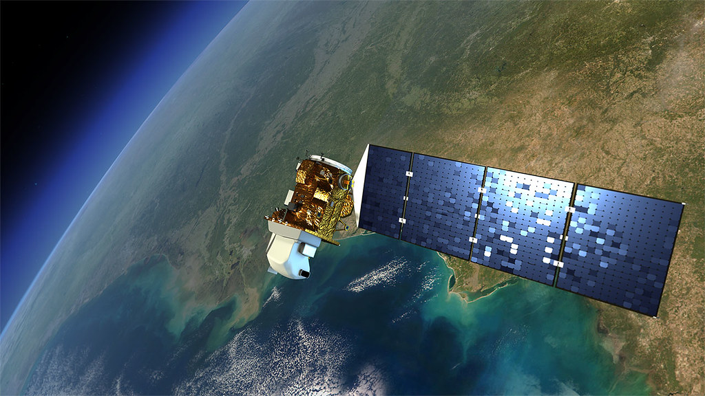
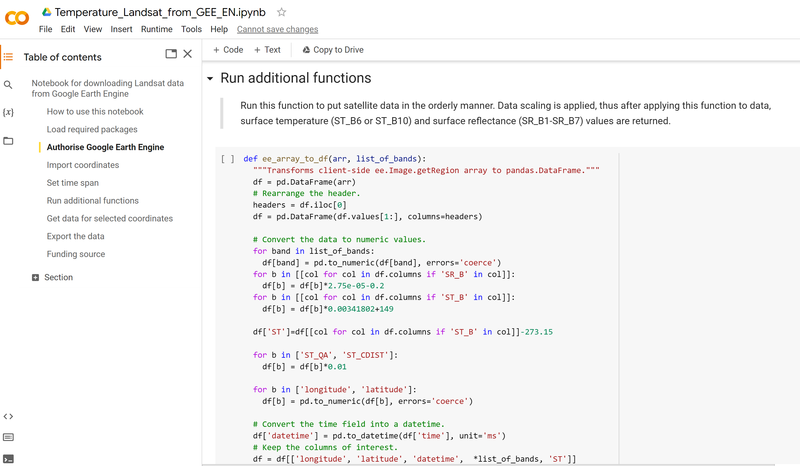
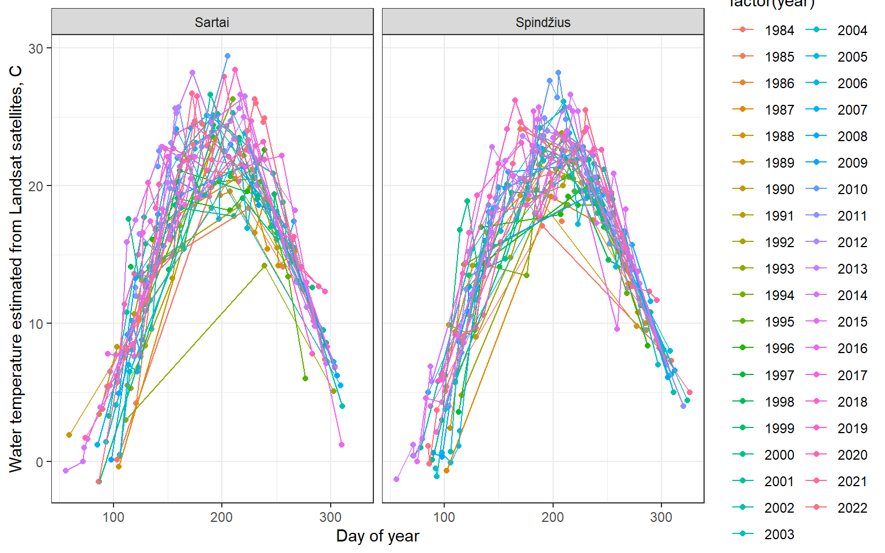
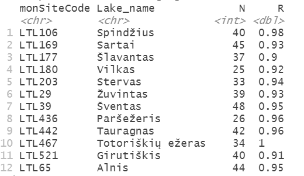
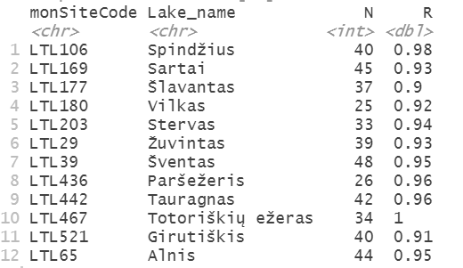

Extracting and analysing lake surface temperature data from satellites
Introduction
Water surface temperature (ST) can be obtained from Landsat mission data. The Landsat mission dates back to 1972, but ST recording are only available since the launch of Landsat 4 satellite in 1984, as this satellite had a thermal infrared sensor (TIRS) that detects long wavelengths of light emitted by the Earth. The intensity of these wavelengths depends on surface temperature.
Currently there are two Landsat satellites operating in Earth’s orbit - Landsat 8 (from March 2013) and Landsat 9 (from October 2021). The easiest way to access these data is through Google Earth engine (GEE), which now integrates an algorithm, which produces image files representing surface temperature (in Kelvin) for each Landsat data pixel. This algorithm was created at the Rochester Institute of Technology (RIT) and the NASA Jet Propulsion Laboratory (JPL) in cooperation with USGS software engineers (Landsat 4-7 and Landsat 8-9 product description). The algorithm uses reflectance data from multiple Landsat bands, TIRS band and auxiliary elevation and atmospheric data to derive the final surface temperature estimates. The data comes at 100 m resolution level, which means that it could be applied to even relatively small lakes. Landsat data are provided for latitudes up to 76 degrees. To learn more about Landsat 8 data collection see the GEE link.

Model code
To help you extract and process temperature data we have two user friendly tools. The main code to access and download the data from GEE is written in Python and is available through Google Colaboratory environment. Google Colaboratory is a free online resource which already has Python libraries installed, so you can run the scripts easily, even if you do not have programming skills. To access the satellite data collections through Google Earth Engine, you need to have a Google account(if you do not have Google account, you can sign up here. Then use your Google account to register for the Google Earth Engine, which will ask you to authorise your account.
Next you can go to the model scripts on Google Colaboratory using the link below

You will see a document that looks like this:

When you open the Google Colab notebook, make a copy of it in your own Google Drive (Select File and then Make a copy in Drive). You can edit your copy of the notebook, if you need, but don’t forget to save. Further instructions on how to use the notebook are found in the notebook itself. To extract surface temperature data you will need to create and upload a csv file with codes, names and coordinates of you sites, like in this example file. The dowloaded satellite data will look like this example file. In this example we only extract data for two lakes (two rows), but you can add as many lakes or sampling points in one lake (rows) as you need. However, remember not to select coordinates close to the shore (ideally more than 50 meters) and don’t put points too close to each other, as the resolution of the data is 100 meters.
Once you have the file with satellite data retrieved for the selected coordinates, you can use this R markdown script to filter cloudy data and remove potentially deteriorated data from Landsat 7 timeseries (from 2018 to 2022). If you want to look at the results of this script without having to run it, you can see it here

Application of the model
To assess the quality of the satellite temperature data we will compare it with the monitoring data from 12 Lithuanian lakes, available from the Lithuanian Hydrometeorological Service (meteo.lt). We expect small differences because in situ monitoring points are close to the shore, whereas for satellite data we chose coordinates in the central part of lake. Because satellite data points very close to the shore (50 meters or less) will be influenced by the coastal surfaces, vegetation and terrain, it is important to only use points that are sufficiently far from the shore. Nevertheless, we can see that the correlation is very high with correlation coefficients usually higher than 0.9
 
